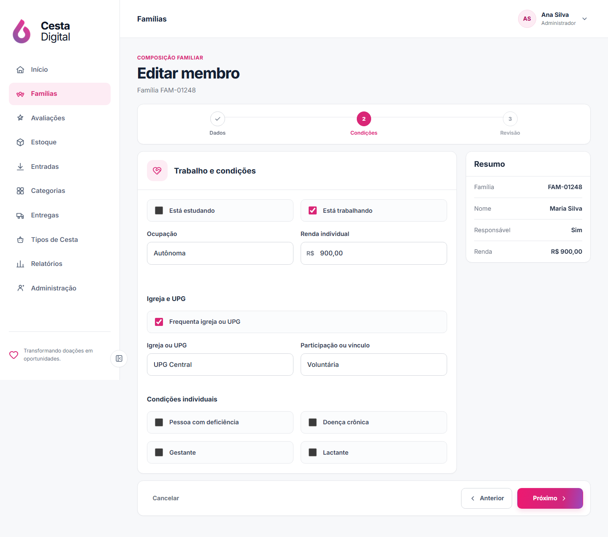
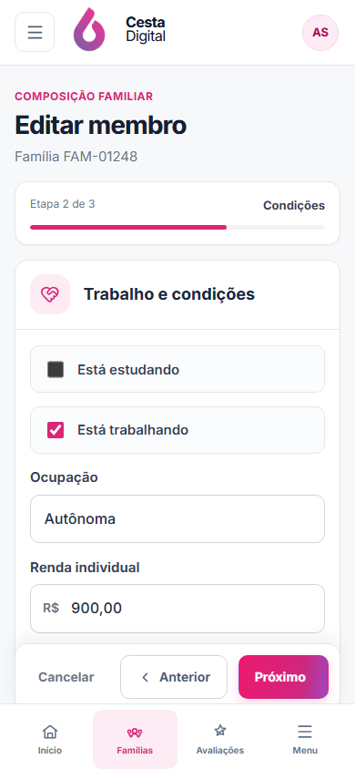
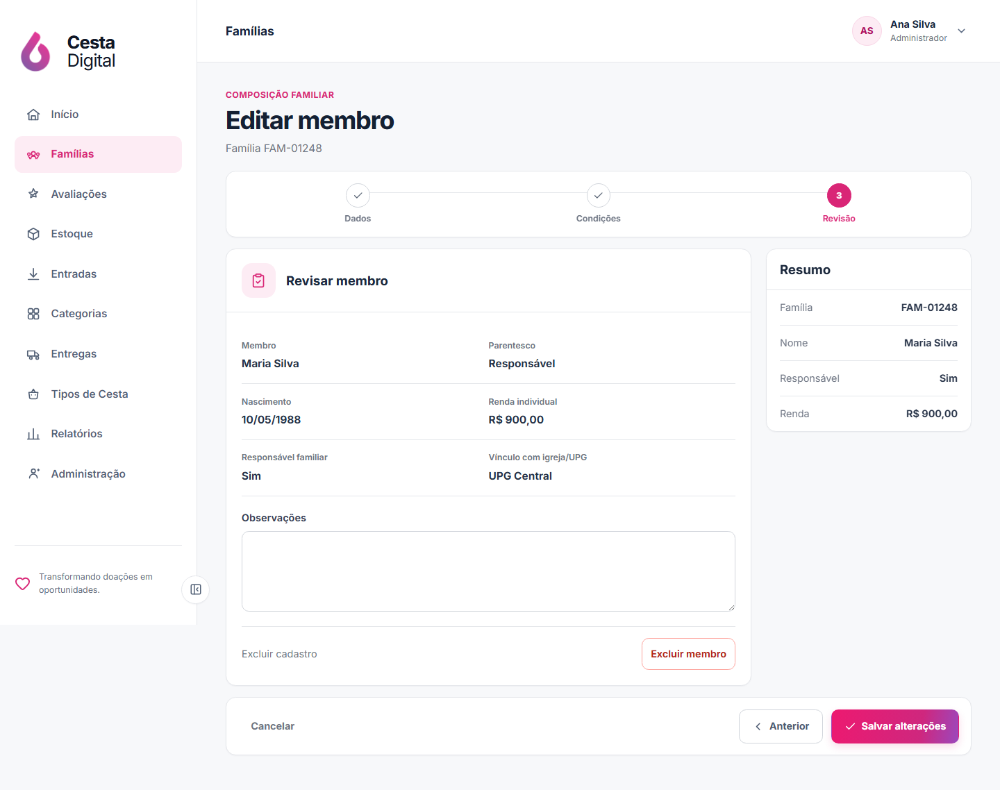
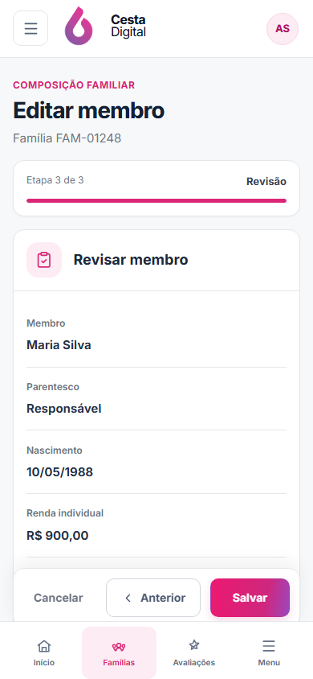

V2-18 · Membros da família
Cadastro e edição no padrão visual aprovado de Famílias. Clique na imagem para abrir a captura original.
Aguardando aprovação visualReferência × cadastro
Superfícies claras, hierarquia e menu lateral no desktop; progresso compacto no celular.


Condições do membro
Trabalho, renda, igreja/UPG e condições individuais sem cartão escuro.


Revisão antes de salvar
A edição só é enviada após confirmação; exclusão exige uma segunda confirmação.


Contrato preservado
Mesmas rotas e campos gravados no backend; escolaridade registrada fora da lista não é perdida.
Sem exemplos
Campos vazios no cadastro e dados fictícios apenas nas capturas de teste.
Próximo passo
Benefícios familiares ficam para uma etapa separada após esta aprovação.